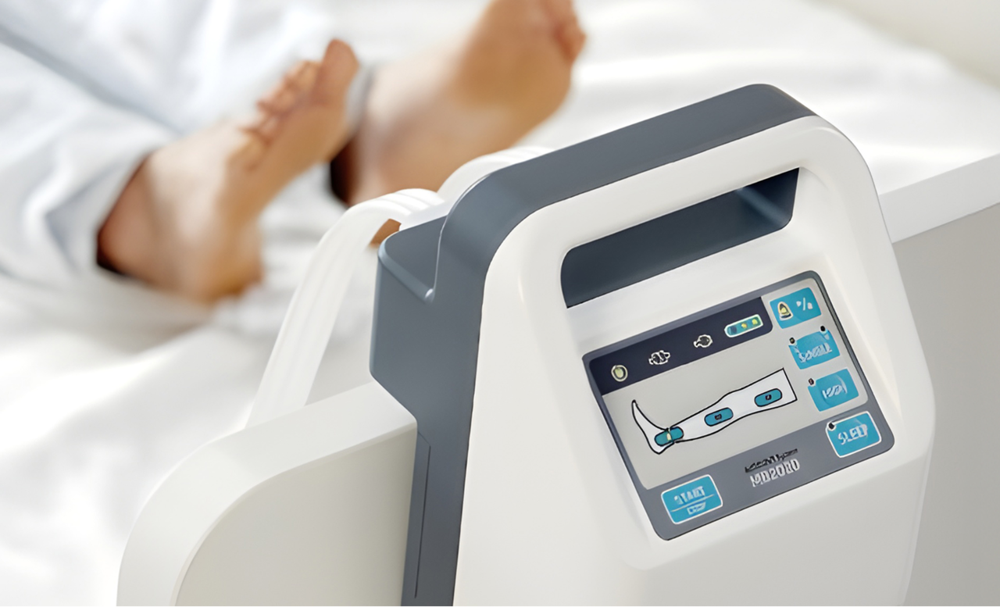
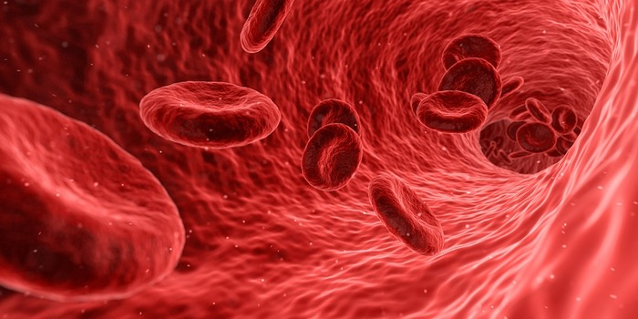
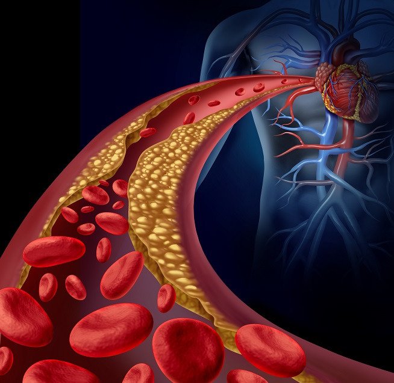

DVT 예방장비
MB헬스케어의 국내 최초 무소음 초경량 IPC 시스템으로 심부정맥혈전증을 효과적으로 예방합니다.
MB DVT 예방 펌프 시스템
Intermittent Pneumatic Compression (IPC) System
외과 수술 후 심부정맥혈전증(DVT) 및 폐색전증(PE) 발생을 완벽히 예방하는 스마트 공압 압박 시스템.
국내 최초 무소음 동작과 1.7kg 초경량 설계로 환자의 안락한 휴식과 의료진의 업무 편의를 보장합니다.

MB DVT 펌프의 3대 핵심 특징
환자의 수면과 회복을 최우선으로 고려한 무소음 기술과 의료진의 피로도를 덜어주는 초경량 설계를 적용했습니다.

무소음 동작 (조용한 회복 지원)
첨단 소음 감소 기술을 적용하여 병실 및 수술실 환경의 소음을 최소화합니다. 환자가 방해받지 않고 깊은 잠을 자고 휴식을 취할 수 있도록 돕습니다.
직관적인 스마트 조작 패널
기기의 직관적인 UI는 의료 전문가가 신속하게 설정하고 쉽게 조작할 수 있도록 돕습니다. 선명한 디스플레이로 기기 압력 상태와 설정을 직관적으로 확인 가능합니다.
초경량 1.7kg 간편한 이동
국내 동일 기종의 펌프들 중에 가장 가벼운 1.7kg의 초경량 본체로 병동, 수술실 간 이동이 매우 편리하며 의료진의 장시간 근무 피로도를 획기적으로 감축합니다.
DVT 공압 압박 펌프 임상 적용 솔루션
준메디칼의 MB DVT 간헐적 공압 압박 시스템(IPC)은 수술 전·중·후 전 단계에 걸쳐 심부정맥 혈류 정체를 해소하고 안전한 혈전 예방을 지원합니다.

수술 중 혈류 정체 차단
전신 마취 및 장시간 부동 상태에서 하지 비복근의 혈류 정체를 공압 챔버의 주기적 가압으로 즉각 해소하여 혈전 형성을 원천 차단합니다.
- 순차적 점진 공압 압박 (Sequential Compression)
- 약물 출혈 부작용 없는 안전한 물리적 예방
- 수술실 마취 시작부터 즉시 가동 지원

회복실 & ICU 집중 순환
수술 직후 회복실 및 중환자실에서 환자의 정맥 혈류 속도를 지속적으로 증가시켜 심장으로의 원활한 혈액 환류를 촉진합니다.
- 수술 직후 고위험 골든타임 집중 케어
- 정밀 압력(30~60mmHg) 단계별 맞춤 설정
- 1.7kg 초경량으로 병동 간 신속 이동 가능
병동 무소음 안전 케어
병동 침상 안정 기간 동안 35dB 이하의 초저소음 무소음 기술로 환자의 숙면을 방해하지 않고 24시간 연속 안전 가동을 유지합니다.
- 환자 수면을 방해하지 않는 35dB 이하 무소음
- 호스 꺾임·공기 누출 감지 스마트 알람
- 장기 침상 안정(Bed Rest) 환자 완벽 대응
정맥 순환 솔루션의 주요 환자군
정형외과 수술, 암 환자, 고령자 및 장기 입원 환자 등 정맥혈전증 고위험군을 위한 표준 가이드라인입니다.
정형외과 관절·골절 수술
전체 고관절 인공관절술(THA), 전체 무릎 인공관절술(TKA), 고관절 골절 수술(HFS) 환자군.
외과·산부인과 암 수술
복부·골반 외과 수술, 산부인과 부인암 수술, 비뇨의학과 전립선 절제술 등 장시간 수술 환자.
중환자실(ICU) & 장기 입원
스스로 거동이 어려운 중환자실 입원 환자, 신경계 마비 환자, 장기 침상 안정(Bed Rest) 환자.
고령자 & 비만 환자군
출혈 우려로 약물 항응고제 사용이 제한되는 수술 직후 환자 및 기저질환을 동반한 고령 환자.
MB DVT 펌프 상세 사양표
| 구분 | 상세 사양 (Specification) |
|---|---|
| 제품명 | MB DVT Compression Pump & Sleeves (간헐적 공기 압박 장치) |
| 제조사 / 원산지 | 엠비헬스케어㈜ (MB HEALTHCARE Co., Ltd.) / 대한민국 |
| 본체 무게 | 1.7 kg (국내 동급 최경량 초경량 바디) |
| 동작 소음 | 35 dB 이하 (무소음 저소음 첨단 챔버 설계) |
| 압박 모드 | 순차 압박(Sequential Mode) / 단일 압박(Single Mode) 선택 가능 |
| 압력 조절 범위 | 30 ~ 60 mmHg (임상 처방에 맞춘 정밀 단계별 설정) |
| 압박 주기 (Cycle Time) | 20 ~ 60초 가변 조절 (인플레이션 / 디플레이션 자동 제어) |
| 디스플레이 | 고휘도 직관적 디지털 LED 패널 (실시간 압력 및 작동 상태 표시) |
| 안전 기능 | 호스 꺾임, 공기 누출, 슬리브 탈락, 과압 방지 시청각 스마트 알람 |
| 전원 사양 | AC 100~240V, 50/60Hz / 내장형 충전 배터리 옵션 |
| 호환 슬리브 종류 | 종아리형, 허벅지형, 발허벅지형, 팔형(숏), 팔형(롱) |
※ 병원 내 데모 시연 및 수량별 견적 문의는 준메디칼 영업팀으로 문의 주시면 신속히 방문 상담을 지원합니다.
※ 공급원: 준메디칼 주식회사 · 제조원: 엠비헬스케어㈜